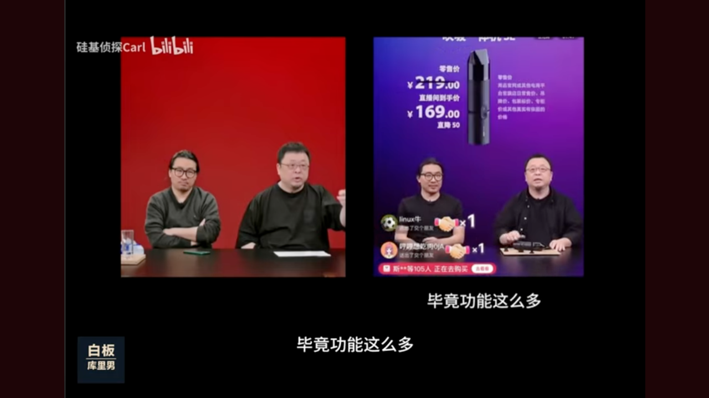
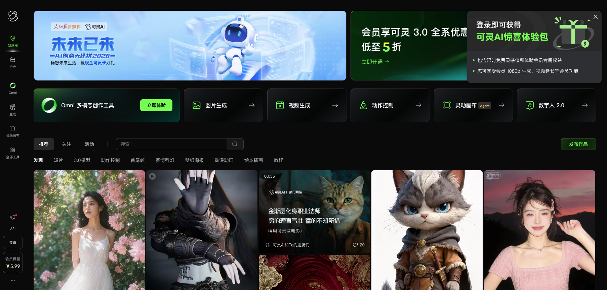
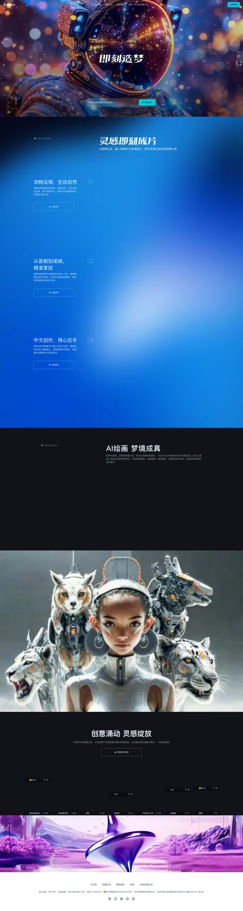
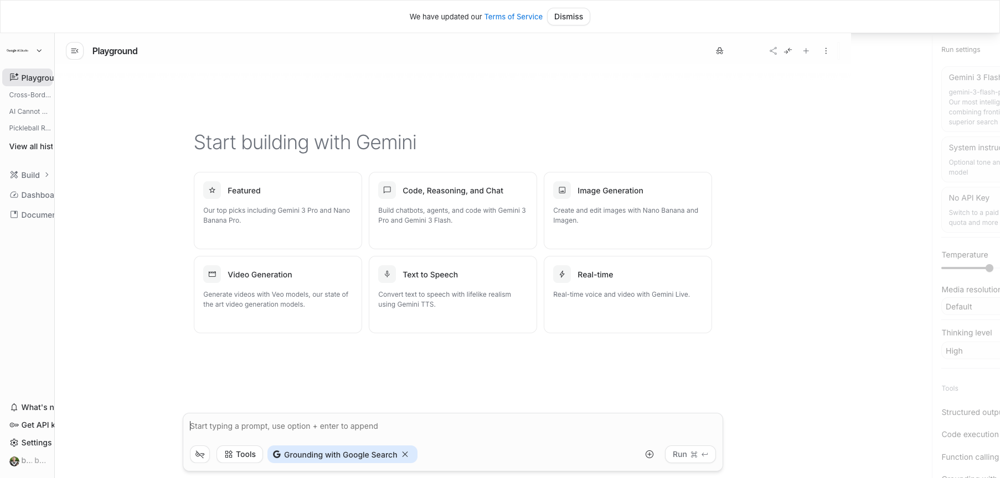
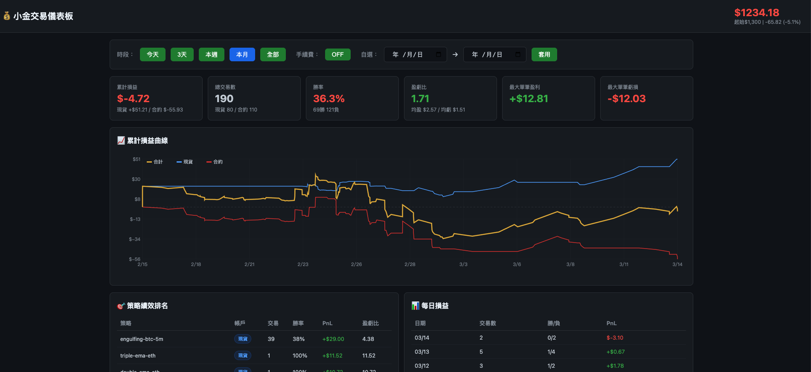

黄昱仁 ｜ 时光智造科技 CEO
武汉东西湖区两岸青年创业基地 × 台青科孵化基地
❶
AI 是实习生
会下指令、会验收
❷
先流程再工具
不被工具牵着走
❸
80/20 法则
重复的给 AI，创意留自己
今天不讲理论，全是操作和案例 🔴
不是贬低谁 —— 是卷的环境逼出了惊人的创新速度
我们来学能学的部分 💪
硅基智能、商汤如影、HeyGen 等平台已大规模商用
抖音/快手/淘宝上随处可见 AI 主播
AI 虚拟主播 24h 直播带货 — 看起来完全像真人

👆 你分得出哪个是真人，哪个是 AI 吗？
▶ 真人 vs AI 数字人对比片段
🎬 数字人能做什么？
🍺 喝啤酒、用筷子吃菜
🪜 爬上桌子展示产品
💬 和弹幕实时互怼、接梗
👓 复刻老罗推眼镜等招牌动作
📝 AI 生成 9.7 万字剧本
🎬 完成 8300 个动作设计
「会骂街的才是正经的老罗」
— 网友评论
来源：36氪、百度电商 | 连名人都用数字人了，你还在手动做内容？
输入：一篇文章 / 一个主题
AI 全自动：
✅ 生成脚本 → 配音（多音色）
✅ 生成画面 → 剪辑 + 字幕
✅ 一键发布多平台
日产 50+ 条视频
一个人抵一个 10 人团队 🏭
可灵 AI、即梦、剪映 AI 等工具已非常成熟

可灵 AI — 快手旗下 AI 视频生成平台

即梦 AI — 字节跳动旗下
🔍
AI 选品
爆款趋势分析
📸
AI 拍图
模特换装换景
✍️
AI 文案
种草文多平台
📺
AI 直播
数字人 24/7
💬
AI 客服
自动回复推荐
一个人开店，AI 当你的 10 人团队
内地已有大量「一人电商」年营收百万以上
1️⃣ 看直播喊 +1
2️⃣ 等小编私信
3️⃣ 跳到其他平台付款
4️⃣ 回传截图确认
链路长 → 流失率高
1️⃣ 看直播/短视频
2️⃣ 右下角 「立即购买」
3️⃣ 完成 ✅
全程不离开 App
链路短 → 转化飙升
竞争激烈 → 逼出极致用户体验 → 每一步都在缩短决策路径
🦞 OpenClaw 杀进中国医疗圈
• AI Agent 接管临床决策支持
• 自动分析影像、辅助诊断
• 掀翻千亿市场 — 全球首个医疗 Agent OS
来源：新智元 · 微信公众号
AI 不只是写文案聊天
连人命攸关的医疗都在用了
来源：新智元
「OpenClaw杀进中国医疗圈，掀翻千亿市场！
全球首个医疗Agent OS来了」
⚖️
AI 法律
合同审查 · 法律咨询
几秒出建议书
🎓
AI 教育
个性化辅导 · AI 老师
一对一不再奢侈
🏗️
AI 设计
室内设计 · 建筑规划
几分钟出效果图
💰
AI 财务
报销审核 · 财务分析
自动化处理
💻
AI 编程
不会写代码的运营
自己搭管理系统
🏥
AI 医疗
辅助诊断 · 影像分析
基层医院大升级
卷出来的不只是竞争，更是全民 AI 化的加速 🚀
好消息：AI 工具全球通用，你今天就能开始 🌍
目标：现场用 AI Studio 产出可发布的内容
✅ 完全免费 — Google 送的
✅ Gemini 最新模型 — 性能顶级
✅ 能搜索网络 — 实时热点
✅ 能生成图片 — 配图一站搞定
✅ 自定义 App — 打造专属 AI 助手
我已经帮大家做好了一个
「自媒体 AI 工作站」App ✨

Google AI Studio — 免费、强大的 AI 开发平台
Step 1 选题
告诉 AI 你的领域 → 它搜索今日热点 → 给你 5 个选题方向
Step 2 文案 × 4 平台
一个话题 → 自动生成抖音脚本 + 小红书笔记 + IG + YT
Step 3 配图
AI 直接生成配图 / 给你可用的 AI 绘图 prompt
🔴
现场操作
用我做好的
「自媒体 AI 工作站」
App 直接演示
💡 观众可以投票选题！
📌 这个 AI Studio App 链接会发到群里，大家可以直接用
选题
2 min
文案 ×4
3 min
配图
3 min
完成！
8 min
别人花 2 小时做的事，你 8 分钟搞定 🚀
从「打开网页问 AI」→「AI 随时在你身边」
🧠 开源的私人 AI 助手平台
📱 连接你所有通讯软件 — LINE、Telegram、Discord、WhatsApp…
💻 拥有电脑完整操控权 — 文件、浏览器、API、代码
⏰ 24/7 不间断运行 — 你睡觉它还在干活
🔒 数据在你手上 — 自架运行，隐私有保障
⚠️ 关键：要用最顶级的 AI 模型来当助理头子
Claude Opus / GPT-4o — 便宜模型会偷懒、会出错、会让你更累
😐 你去找它（开网页/App）
😐 只能聊天对话
😐 不能操作你的电脑
😐 关掉就忘了你是谁
😐 数据在别人服务器
✅ 它在你身边（LINE/TG 发消息）
✅ 能做事（操作电脑、浏览器、文件）
✅ 能主动（定时排程、主动提醒）
✅ 记得你（持久记忆系统）
✅ 自架私有（数据在自己手上）
从「工具」进化成「伙伴」🤝
我用 OpenClaw + 最顶级 AI 模型 搭建虚拟团队：
⚠️ 核心：头子用最强模型 → 判断准、不出错
手下用便宜模型 → 高效执行、成本可控
实际成果
✅ 独立开发 2 个 SaaS 产品
✅ 同时推进 5 个项目
✅ 全自动 社群内容产出
✅ 24/7 AI 客服系统
一个人 + AI = 一个完整团队
月成本不到一个实习生薪水
在手机 LINE 上发消息给 AI 助手
看它如何即时回应 + 执行任务
💡 演示：
① 发消息 → AI 即时回覆
② 让 AI 搜索信息 → 整理回报
③ 展示多 Agent 协作派工
🤖 「小金」— 我的 AI 交易伙伴
✅ 完全不懂交易的人，也能参与市场
✅ AI 自动研究策略、执行交易
✅ 每天接收报告 → 边学习边优化
✅ 人不在电脑前，AI 持续运作
关键不是赚多少
而是一个完全不懂的人
也能用 AI 进入一个全新领域
边做边学、持续进化 📈
📊 实时仪表板：wealth.timux.site/dashboard

小金交易仪表板 — 190 笔交易 · 多策略并行 · 实时损益追踪
来，大家一起做个小测试 👇
😤 先来吐槽 — 你最烦的事？
每天花多少时间在重复性工作上？
哪件事让你觉得「这也太浪费时间了」？
生活中有没有什么「好烦好不方便」的事？
你最想从工作中解放的一件事是什么？
💡 越不满现状 = 越适合用 AI
不安于现状的情绪，就是进步的动力
🔍 你的 AI 使用现况
Level 0️⃣ 没用过 / 偶尔玩玩
Level 1️⃣ 用 ChatGPT 写文案/翻译
Level 2️⃣ 日常工作有固定用 AI
Level 3️⃣ 建立了 AI 工作流程
Level 4️⃣ AI 已经是你的团队成员
大部分人卡在 Level 1 → 2
今天教的工具能直接帮你跳到 Level 3+
你烦的每一件事，都可能有 AI 解法 💡
不满现状 → 找到痛点 → 交给 AI → 你去做更有价值的事
🇨🇳
卷的启发
内地的效率值得学
台湾的创意是护城河
结合 = 降维打击
🦞
AI 伙伴
不只是聊天工具
用最强模型当大脑
变成你的 24/7 助手
⚡
马上行动
AI Studio 免费用
8 分钟产 4 平台内容
今天回去就能开始
🧧 红包活动
🥇 抢到最大的 → 手把手教你搭建个人 OpenClaw AI 助手
🎯 抢到最小的 → 1v1 分析你的企业/工作中哪些能用 AI 加速
📱 进群福利（所有人）
📄 今天所有 Prompt 模板
🔧 AI 工具清单（50+ 工具）
🔗 AI Studio App 直接用
🔥 持续更新最新最卷的 AI 知识
微信群
QR Code
⬆️ 请替换
扫码 = 红包 + 资料 + 最新 AI 动态
🛠️
AI 助手搭建工作坊
手把手搭建私人 AI 助手
半天 · 小班制
📱
AI 自媒体训练营
完整工作流 + 矩阵号
3 天 · 含实操
👑
AI 创业者联盟
年度会员 · 1v1 咨询
资源对接 · 持续更新
🐦 进群了解详情
时光智造科技
www.timux.site
🌐 www.timux.site
📧 联系邮箱占位
📱 联系电话占位
🦞 openclaw.ai
个人微信
QR Code
⬆️ 请替换